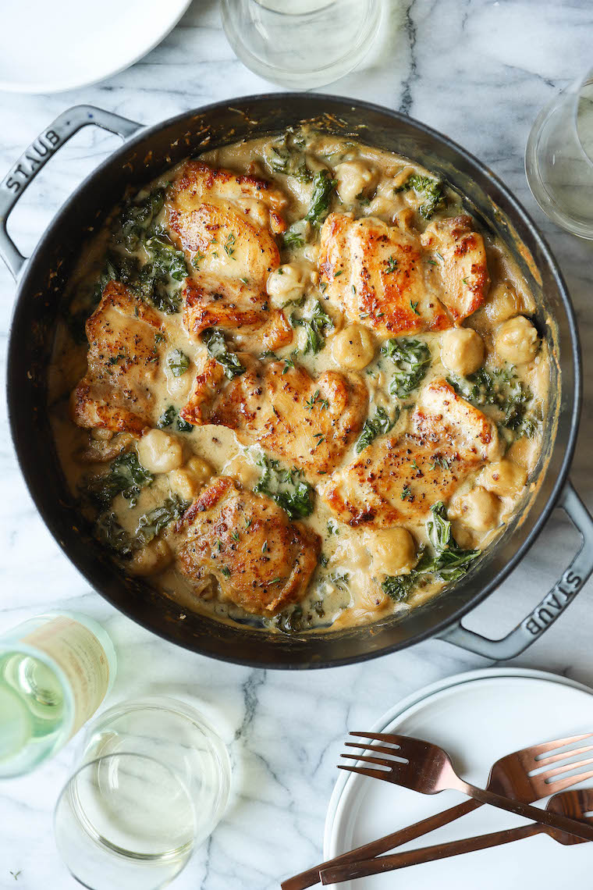

Creamy Chicken and Gnocchi
Soft-pillowy gnocchi, a garlicky cream sauce, tender, juicy chicken thighs, and sneaked-in kale? Yes, 1,000% yes.
Just a litte inspiration

Featured Comment
A phenomenal recipe! The cream sauce is SO delicious. I substituted chicken breasts for the thighs, because I just can’t stomach chicken thighs. Also, the kale was subbed with baby spinach. Everything else was exactly what your recipe called for. And it was such a great dinner. My family was singing its praises as well. This is absolutely one for the regular dinner rotation. Thanks so much for sharing it.
Tips and Tricks to Success
-
Homemade gnocchi goes a long way. In a pinch, we love using cauliflower potato gnocchi but we also highly recommend using homemade gnocchi if you have the time. It makes all of the difference!
-
Choose a wine you will drink. A dry white wine (pinot grigio or sauvignon blanc) is great here – it does not have to be anything fancy or overpriced. Just something you don’t mind sipping on since you will have an open bottle.
-
Add in your leafy greens.This is a great recipe to sneak in all the greens (kale, spinach, cabbage, swiss chard or collard greens) for those picky eaters.
-
Serve with crusty bread.Serve with all the homemade crusty bread for dipping, sopping and dunking!
What to serve with chicken and gnocchi
-
No Knead Rosemary Bread
-
Garlic Parmesan Roasted Broccoli
-
Glazed Carrots
-
Roasted Sweet Potatoes
-
Italian Chopped Salad
Ingredients
-
1 (16-ounce) package cauliflower potato gnocchi
-
1 ½ pounds boneless, skinless chicken thighs
-
Kosher salt and freshly ground black pepper, to taste
-
5 tablespoons unsalted butter, divided
-
1medium shallot, diced
-
3 cloves garlic, minced
-
2 teaspoons chopped fresh thyme leaves
-
3 tablespoons all-purpose flour
-
1 ¼ cup chicken broth
-
¼ cup dry white wine*
-
½ cup half and half
-
1 bunch kale, stems removed and leaves torn into bite-sized pieces
½ cup freshly grated Parmesan, about 2 ounces
Equipment
Instructions
-
Preheat oven to 400 degrees F.
-
In a large pot or Dutch oven of boiling salted water, cook gnocchi according to package instructions; drain well.
-
Season chicken with 3/4 teaspoon salt and 1/2 teaspoon pepper.
-
Melt 2 tablespoons butter in a large oven-proof skillet or Dutch oven over medium heat.
-
Working in batches, add chicken to the skillet in a single layer and cook until golden brown and cooked through, reaching an internal temperature of 165 degrees F, about 4-5 minutes per side; set aside.
-
Melt remaining 3 tablespoons butter. Add shallot, and cook, stirring frequently, until tender, about 3-5 minutes. Stir in garlic and thyme until fragrant, about 1 minute.
-
Whisk in flour until lightly browned, about 1 minute.
-
Gradually whisk in chicken broth and wine, and cook, whisking constantly, until slightly thickened, about 3-5 minutes. Stir in half and half until thickened, about 1-2 minutes; season with salt and pepper, to taste.
-
Stir in gnocchi and kale until the kale has wilted, about 1-2 minutes. Return chicken to the skillet; sprinkle with Parmesan.
-
Place into oven and bake until bubbly, about 10-12 minutes.
-
Serve immediately.